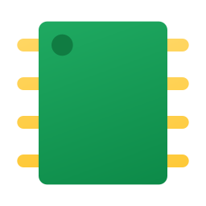
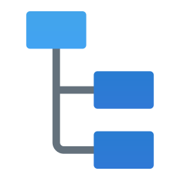

Plausible is not correct
Agents emit synthesizable-looking RTL with no deterministic ground truth. Syntax checks pass, synthesis passes, the design is wrong.
Measured by FAR and HFP
Phase 0 · protocol open for review
An agent that can write a proof of a weak specification has produced assurance, not correctness. bendEDA is the harness for a pre-registered study of that gap: Bend 2 laws on one side, a hidden oracle on the other, and a conformance ladder measuring the distance between them.

The problem
Three failure modes this programme measures rather than assumes away.
Agents emit synthesizable-looking RTL with no deterministic ground truth. Syntax checks pass, synthesis passes, the design is wrong.
Measured by FAR and HFP
A valid proof of an under-specified law is worthless, and an agent rewarded for closing proofs is rewarded for weakening what is proved.
Measured by RBW, VR, AER
Long EDA sessions accumulate tool state; an agent can overwrite a golden file or run formal before the RTL exists.
Measured by IAR and UAR
Architecture
Bend has no hardware semantics. A proof about a model constrains Verilog only through these links — so each one is a separate, measured gate.
bend PROOF.bend must print ALL PROOFS CHECK. This says nothing about RTL, and the site will not pretend otherwise.
Identical stimulus through model.mjs and the RTL, compared cycle by cycle. Catches divergence on sampled traces.
Complete over a 4-bit datapath or a depth-4 FIFO. Complete over a small space is not complete, and is labelled as such.
Laws translated to SVA and proved on the RTL with SymbiYosys. Strongest rung — bounded by translation fidelity, which is itself measured.
Removes the translation gap entirely. Out of scope for this study; listed so the gap is a roadmap item, not a footnote.
LAWS.bend→model.bend→ref_model.sv / SVA→RTL
Quickstart
The harness is dependency-free at import time: the CLI and the metric definitions run on a bare Python 3.12 install.
# 1. clone and install
git clone https://github.com/JoeyHammoth/bendEDA
cd bendEDA
python -m venv .venv && . .venv/bin/activate
pip install -e ".[dev]"
# 2. check the harness
bendeda --version
bendeda validate --all
python -m unittest discover -s tests -vActivate with .venv\Scripts\activate, or open the devcontainer. Bend and the EDA suite run in Linux containers either way.
Commands that are not implemented print what they will do and exit 3. Nothing silently passes — that is the whole subject of the study.
README for the shape, tasks/README for a task package, wiki for the running log.
Reference
bendeda CLIEvery command below exists in the package. “Working” means it does something; “planned” means it exits 3 and tells you which phase implements it. The L1 trace gate is working today — it compiles a Bend model, runs it under Node, and detects an injected one-cycle offset.
| Command | What it does | State |
|---|---|---|
bendeda init [path] | Scaffold an experiment or task repository | working |
bendeda task new <name> --tier B | Create a task package skeleton (9 files, status draft) | working |
bendeda validate --all | Validate shipped schemas and every task package | working |
bendeda conformance compile | Compile a Bend model to an ES module at the pinned compiler commit | working |
bendeda conformance trace | Drive the model cycle by cycle, diff against a DUT, and name the defect (value vs one-cycle offset) | working |
bendeda law lint <path> | Apply rules L001-L015: witnesses, traceability, vacuity, escape hatches, provenance | planned |
bendeda law mutate <model.bend> | Mutate the model; every law must be falsified by at least one mutation (LA3) | planned |
bendeda law translate --to sva | Translate laws through templates and emit a translation-fidelity plan | planned |
bendeda law provenance <task> | Verify the agent authoring chain: run ids, model digests, forbidden reads | planned |
bendeda tf run <task> | Compute translation fidelity over random and mutated traces | planned |
bendeda canary | Run the checker negative-control suite; one false accept blocks the Bend arms | planned |
bendeda gate run <name> | Run one gate (lint, sim, formal, conformance) on an artifact directory | planned |
bendeda gate calibrate | Gate sensitivity and specificity against the seeded-bug corpus | planned |
bendeda run <experiment.yaml> | Execute an arm × task × model × seed matrix within budgets | planned |
bendeda replay <run_id> | Replay a run deterministically from its event log | planned |
bendeda oracle seal | verify-commitment | score | Commit-reveal the sealed oracle, verify the commitment, score a run | planned |
bendeda report <experiment> | Primary and secondary tables, forest plots, results bundle | planned |
bendeda bundle verify <dir> | Re-check a proof-carrying design bundle in the pinned image | planned |

Extension surface. Law languages, translators, gates, oracles and hardware boards are Protocols in
bendeda/plugins/interfaces.py. A new tool is a plugin, not a fork: the harness never imports a plugin to describe it.
Measurements
Each is a pure function of counts, implemented in bendeda/metrics/ and pinned by a hand-computed test. Undefined returns None, never a reassuring 0.0.
FP / N
The confirmatory endpoint: runs that looked verified and were wrong, as a share of all runs. Unconditional, so it cannot be gamed by selection.
Σ O / N
Correctness yield against the hidden oracle. The non-inferiority partner of FAR, so a gate cannot win by rejecting everything.
FP / (TP + FP)
The headline number people quote, reported with n_V because it is conditional on a post-randomisation variable.
agreement / traces
How faithfully a Bend law became an RTL property. Admission requires mean ≥ 0.999 and minimum ≥ 0.99.
killed / relevant
How much a verification set actually checks, over mutants whose output change is confirmed by equivalence checking.
Σ tokens / TP
Efficiency of trustworthy output. Undefined with no verified success — which is a finding, not a division error.
Status
Nothing is frozen until the signed prereg-v1 tag. Before that, every change is a reviewable diff.
Protocol v0.4, repository foundation, harness skeleton and metric definitions. In progress: pinned images, BendBV, canary suite, sealed-oracle tooling.
12 task packages, agent-authored law sets, hidden oracles, parity audit.
MCP servers, policy proxy, runner, replay.
Calibration, power analysis, signed prereg-v1.
Longitudinal study, tracks B-D, report, oracle reveal.
The most useful contribution is a defect in the protocol: a law that admits a bad design, an assumption that excludes legal behaviour, an oracle that misses a plausible bug.